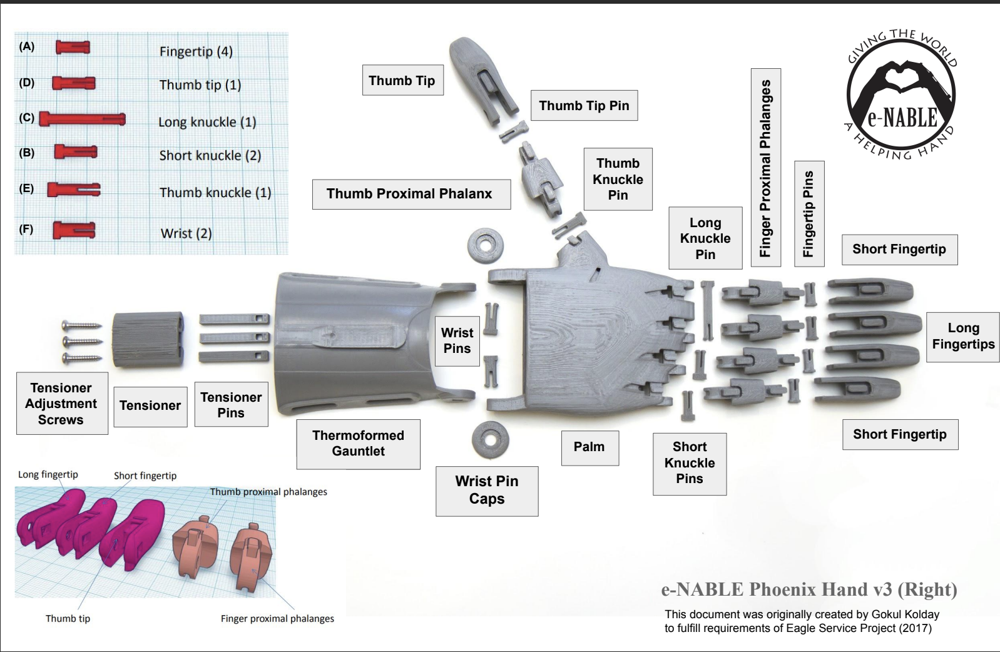
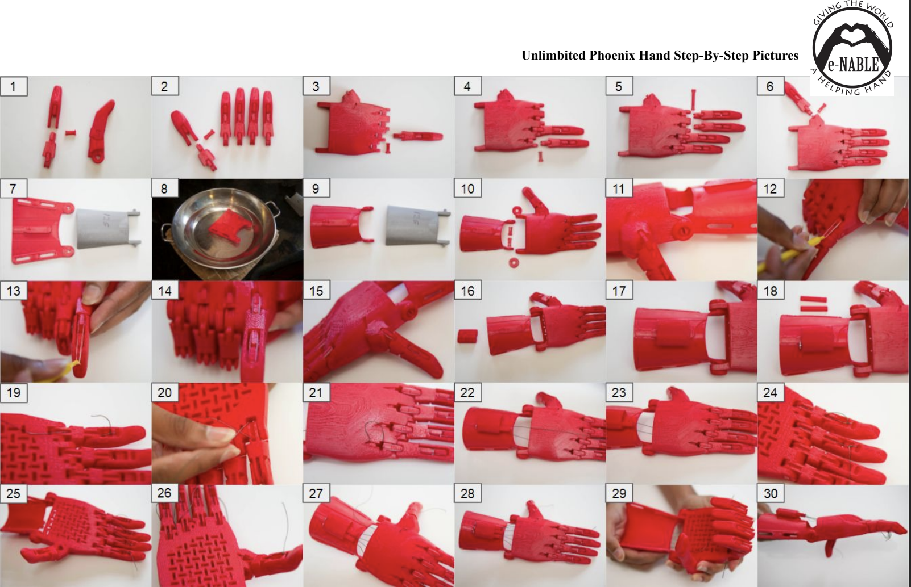
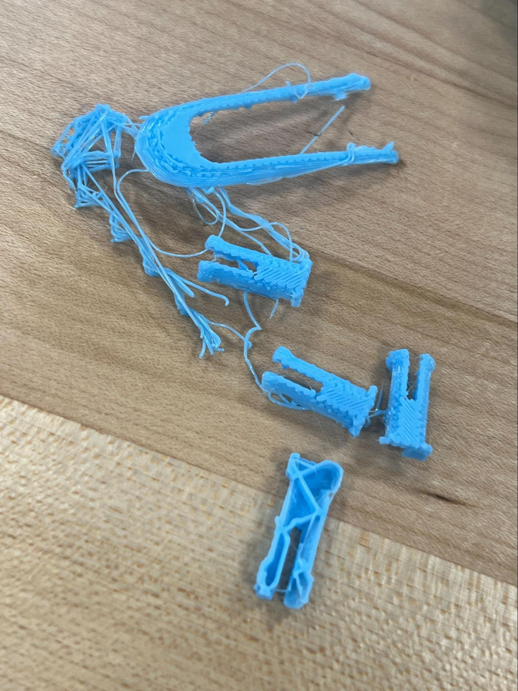
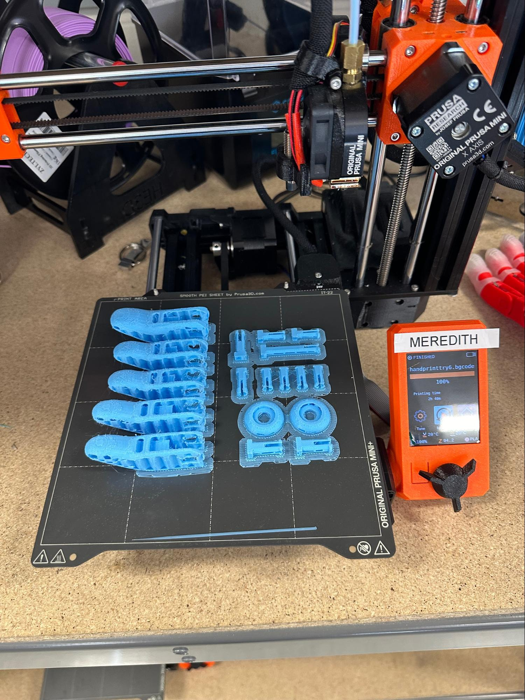
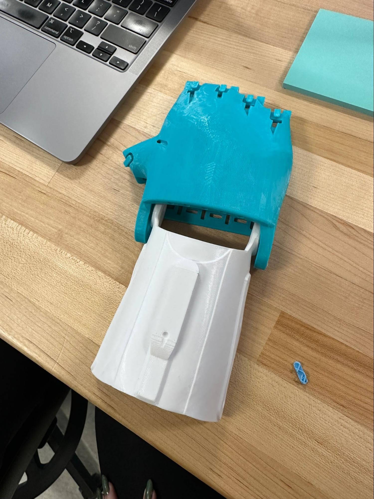
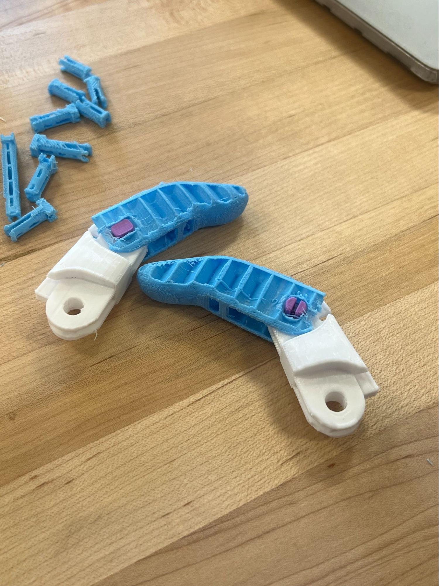
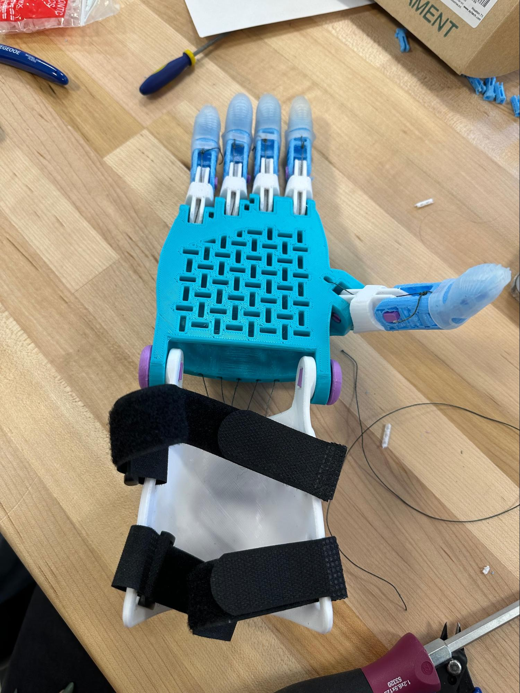
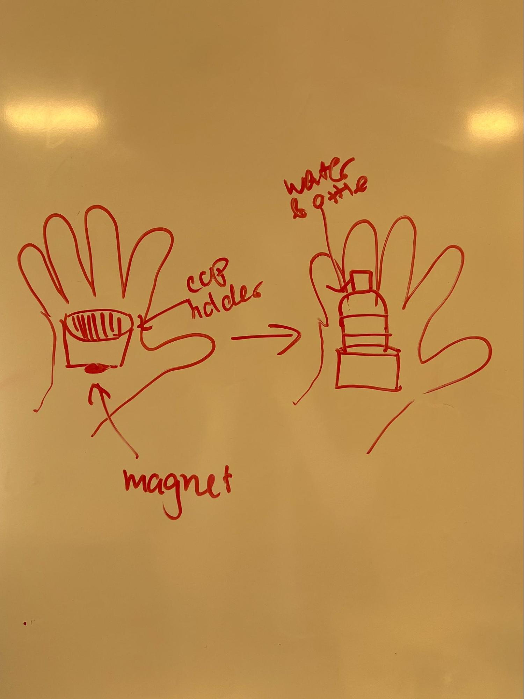
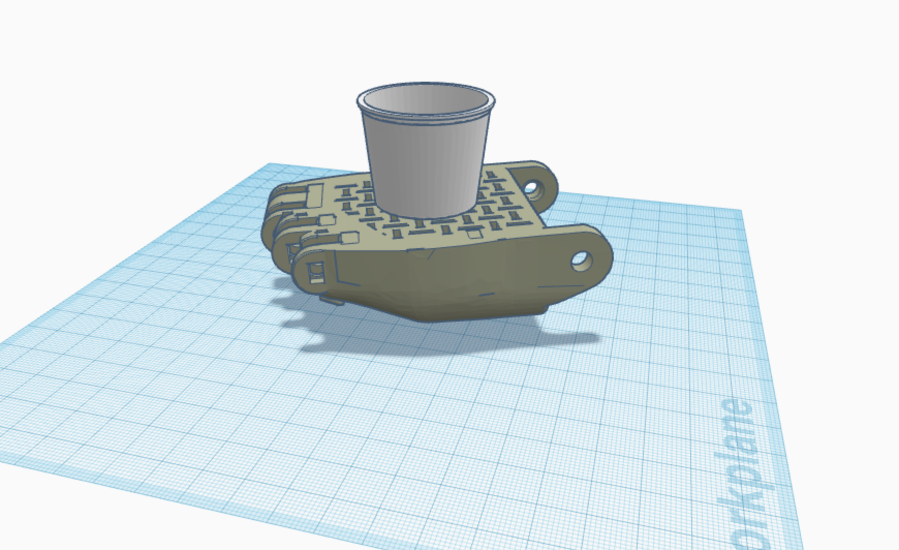

Project 4: e-NABLE Prosthetic Hand
For this project, we were tasked with working in pairs to 3D print and assemble open-source hardware, specifically the “UnLimbited Phoenix Hand.” The design provided several types of documentation to aid with assembling the hand. I referenced these two assembly diagrams (as seen below) and this video. The first diagram was very helpful for identifying which piece was used for what purpose, especially since many of the tension pins looked very similar at first glance. The video was also very useful because I could pause and rewatch if I did not understand something the first time. One thing I found confusing was the amount of duplicate files that appeared exactly the same when I went to download the STL files for printing the parts of the hand. I ended up downloading all the provided files and just choosing blindly which ones to slice and print, which worked out fine in the end but was a lot more stressful and confusing than it should have been.
 The first few attempts at printing many of the smaller parts did not go well since they would shift or detach from the bed. My partner and I tried adjusting the speed of the printing process, but that was unsuccessful. What finally worked was adding a raft of 2 layers to keep the parts from shifting or completely detaching throughout the printing process.
 There were no issues printing the large palm piece (blue) or the gauntlet (white). I was surprised by the fact that the gauntlet was printed flat then we had to use heat and a mold to shape it cylindrically, however this makes sense because it can be shaped to fit the forearm of the intended user. We also made sure it was very slightly too narrow in comparison to the width of the cavity of the palm piece to allow for ease in assembly.
Here is a progress pic of assembling the fingers, and the finished product:
 The design modification to the hand that we came up with is adding a magnetic cup holder that attaches to the palm of the hand so the user can hold a water bottle or other beverage. We were inspired to design this modification when testing our hand; we tried to pick up a water bottle the traditional way one would with their own hand and found it was too heavy for the grip of the prosthetic hand to support.
 